Key Takeaways
3 days · 9 parallel tracks · Sessions from Meta, Google,
NVIDIA, Spotify & more
May 6 – 8, 2026 · Presenting to: Data Engineers & Managers
3 Days. Multiple Tracks. One Theme.
Day 1 · May 6
Parallel tracks M1–M9
M1: AI & ML
M2: DE & DataOps
M3: Platform & Architecture
I attended: DE, Platform & AI/ML
Day 2 · May 7
Parallel tracks M1–M9 continue
Keynote: Google Agentic Data Cloud
Sessions: Agentic readiness, Data quality, Knowledge fabrics
I attended: Platform & AI/ML
Day 3 · May 8
Industry tracks i1–i5
i1: Finance & Telecom
i2: Manufacturing & Energy
i3: Retail, E-Commerce & Logistics
I attended: Retail track (i3)
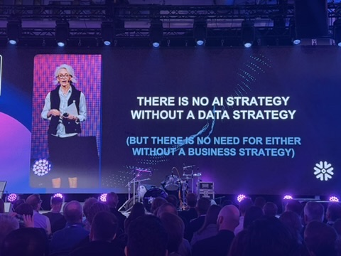
"There is no AI strategy
without a data strategy"
(But there is no need for either without a business strategy)
— DIS 2026 Opening Keynote
AI is Accelerating Faster Than You Think
- AI capability doubles every 7 months — faster than Moore's Law
- Data centers are becoming AI Factories — token generators
- AI Infrastructure is a 5-layer ecosystem:
Energy → Chips → Infrastructure → Models → Applications - Use lightweight open-source models where frontier models aren't needed — save cost in tokens
- Agent-to-agent communication is the next frontier after post-training
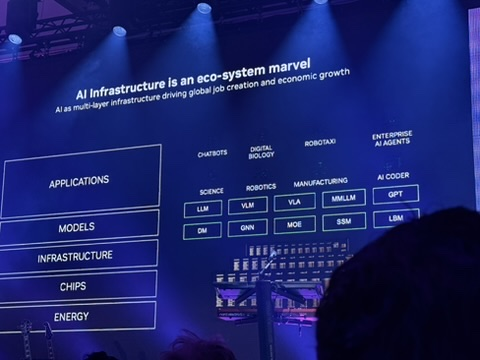
Blueprint for Specialized AI Agents
- NemoClaw = reference architecture for building specialized agentic systems
- Integrates: memory, tools, sub-agents, multi-modal prompts
- Model outputs via Nemotron, Nemo, Dynamo, NIM
- Sub-agents communicate via OpenShell
- Key lesson: design for agent orchestration, not single model calls
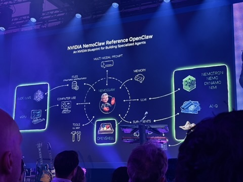
The Physical Reality of AI
Dialogue: Anders Ynnerman (Sferical AI) & Anders Arpteg (Saab VP AI & Data)
- AI infrastructure requires massive physical investment
- Scale reality: 1,252 GPUs · 158 kW per rack · liquid cooling
- AI is transforming from a software problem to an energy + infrastructure problem
- Awareness of physical constraints is key to realistic AI planning
- Not every company needs frontier-scale infra — right-size your compute

Industrial AI: Reshaping Industry End-to-End
Full Industrial Value Chain
AI transforms design, engineering, production, operations, energy and buildings — not just one layer
Business-Critical Value
More competitive, resilient and sustainable operations through AI — speed, flexibility, quality
Smarter Adaptive Operations
Real-time decision-making · Faster problem-solving · Quality-driven factories
The Right Foundation
Industrial data + domain expertise + AI capabilities + partner ecosystem = real-world impact
Understanding Data at Scale
The Manual Data Understanding Trap
storage systems
in scope
and fields
- No shared schema language across systems
- Tickets don't scale. Manual understanding fails at this level.
- Solution: Privacy Aware Infrastructure (PAI) — automated, continuous
- Adopted a shift-left approach: privacy embedded early in dev lifecycle
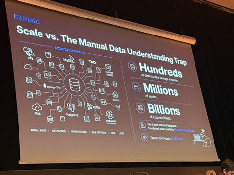
Semantic CI/CD Pipeline
Treat data understanding as an automated, idempotent pipeline
- Each stage is automated and monitored
- Classification: heuristics (regex for emails, etc.) + ML classifiers
- A decade of investment — millions of assets catalogued daily
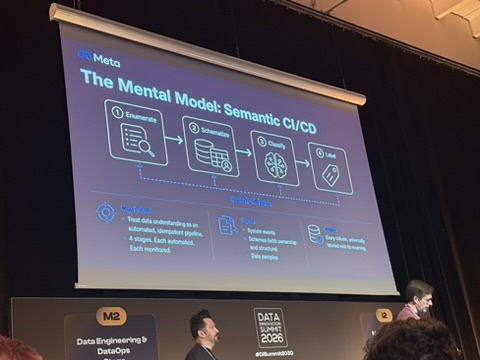
From Nightly Batch to Real-Time
- Powered by Change Data Capture (CDC)
- Before: days of delay between table creation and classification
- After: classification in minutes
- Privacy becomes a pipeline property, not a post-hoc check
- Prevents downstream pipeline poisoning before it starts
- ML access control applied automatically at classification
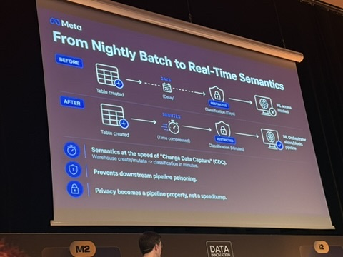
Personalization at 100M+ Users
The evolution of AI-powered recommendations
- Challenge: pre-trained LLMs don't speak "Spotify"
- Fix: ground in catalog, align with behavior, optimize for goals
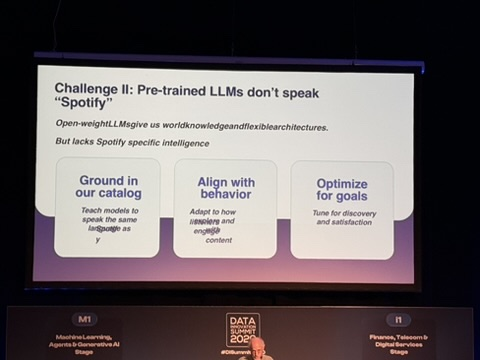
The Agentic Data Cloud
From systems of intelligence → systems of action
- Data Agents empower every role in the data org
- Moving from reactive dashboards to proactive action
- Grounding agents in enterprise semantic knowledge, not raw data
- Team transformation: from solo performer → orchestrator
- Demo shown: Agent Catalog in Google Cloud Console
- Moving from human scale to agent scale across clouds
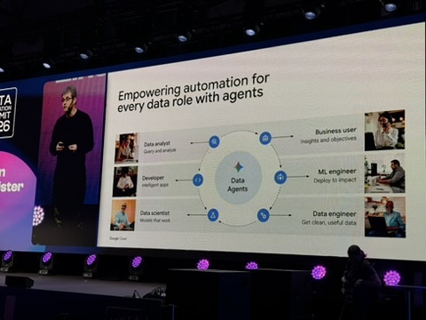
Natural Language Across the Data Stack
- Gemini Enterprise integrated across Google's data tooling
- Looker: natural language for BI and dashboards
- BigQuery: AI-powered analytics for data practitioners
- Lakehouse: NL queries against Delta, Delta, Hive data
- Full code transparency in conversational DB insights
- Goal: any employee gets answers instantly — no query skills needed
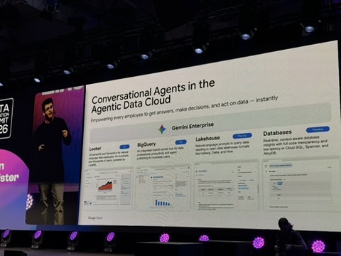
Google Cloud Data Agent Kit
Meeting developers where they live — every IDE, every terminal
MCP Tools
Model Context Protocol integration with Data Cloud
Skills
Portable agentic capabilities, any window
Plugins
Ecosystem extensions for productivity
IDE Extensions
VS Code, JetBrains, any IDE
Agentic ecosystem: Codex · Claude · Gemini — open choice of model
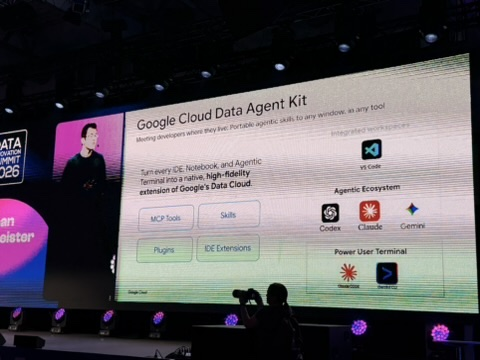
The Four Fabrics Framework
Is your enterprise ready for an agentic future?
Knowledge Fabric
= Metadata fabric. Enterprise semantic layer. The foundation everything runs on.
Governance Fabric
Rules, policies, lineage, compliance controls across systems.
Compute Fabric
The execution engine. Distributed high-performance processing.
AI Fabric
GenAI-powered data management. MCP is critical here.
Key: Metadata is derived from data. Everything is metadata-driven.
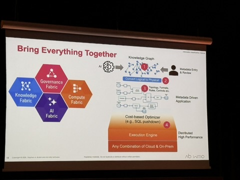
How AI-Ready Is Your Data?
that is AI-ready
that is AI-ready
3 prerequisites before jumping into AI:
- Business alignment first — be specific about what an agent will do
- Solid data foundation — multicloud, open APIs, governance in place
- Agentic enterprise components — orchestration, monitoring, evaluation
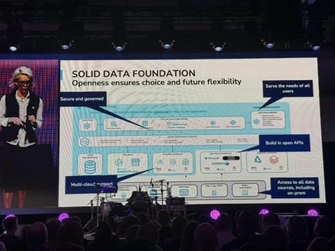
Enterprise Context Window
What AI agents need to actually be useful
- Data Assets: Cloud, On-Prem, Hybrid · Structured, Streaming, Unstructured
- Knowledge Bases: Legacy governance, data catalogs, business documents
- Operational Artifacts: Alerts, tickets, runbooks
- MCP (Model Context Protocol) is the connectivity layer that wires everything
- Without this context, agents hallucinate or miss business-critical constraints
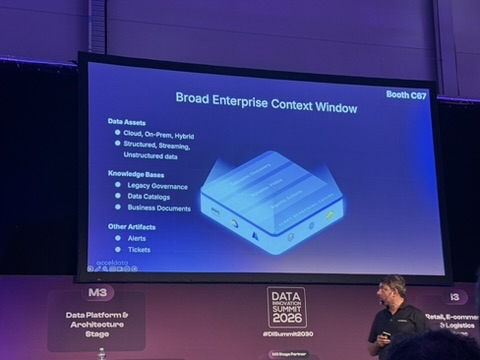
What Actually Works in Practice
- You don't fail because of the technology — you fail because of data
- Fix data, be relevant, get product data correct first
- Know which Customer Data Platform (CDP) you need — or build your own
- Choose AI vendors carefully — set clear rules on who does what
- People need data literacy; tech people need business literacy
- Involve everyone in experimentation — let them play with AI tools
- Elgiganten example: personalization through testing, learning, improving
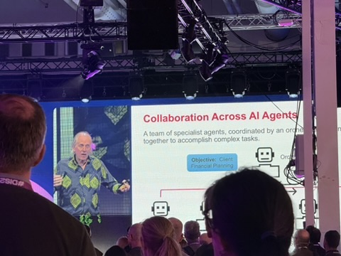
Taking a 100-Year-Old Company Into the Data Future
"It is not just about the data — we need the people on board!"
- A century of customer knowledge — but the methods have changed dramatically
- The real challenge is the change journey, not the technology itself
- Learning which tool to use when is a critical skill — not every tool fits every problem
- People alignment is the actual barrier to data investment paying off
- Hands-on methods and organizational learning beat top-down mandates
- You need data literacy and the willingness to let people experiment
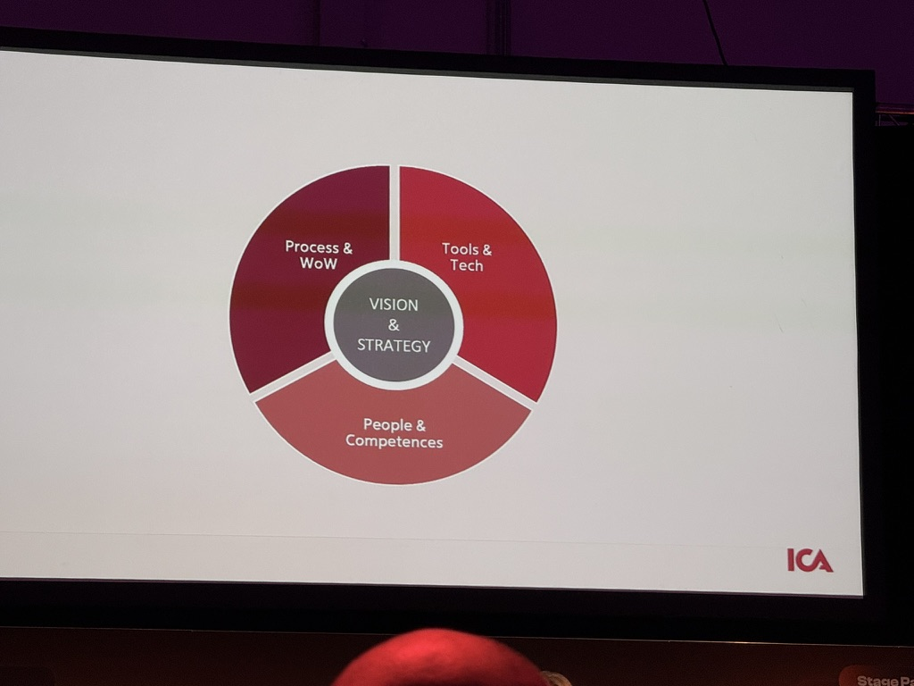
Three Mantras to Take Home
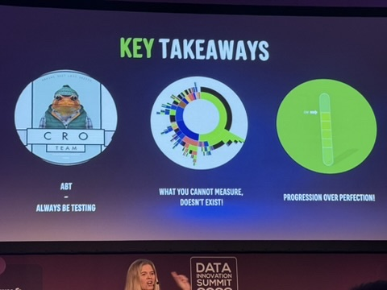
Small iterations · Learn fast
measure doesn't exist" Track what matters · Instrument everything
Don't wait for perfect
What This Means for Data Engineers
Fix the data before adding AI
AI amplifies good data and bad data equally. Clean, classified data is the prerequisite — not an afterthought. (Meta, Day 3 Panel)
Invest in metadata — it's the foundation of every agentic system
Knowledge fabric = metadata fabric. Cataloging, lineage, and semantic classification are not nice-to-haves. (Ab Initio, Meta)
MCP is becoming the integration standard — evaluate it now
Model Context Protocol appeared in every agentic architecture at the summit. Assess it for our stack. (Google, Acceldata, Ab Initio)
Right-size your models — frontier isn't always the answer
Use lightweight open-source models where they're sufficient. Frontier models cost more in tokens and infra. (NVIDIA)
Build data literacy — it's now everyone's job
Data engineers need business context. Business users need data literacy. This cultural gap is the real blocker. (Panel)
Thank You
Questions? Full session notes available on request.
Meta
Semantic CI/CD for privacy-aware data at scale
Agentic Data Cloud · MCP · Data Agent Kit
Spotify
GenAI personalization evolution at 100M+ users
NVIDIA
AI infrastructure reality · NemoClaw blueprint
Ab Initio
Four Fabrics framework for agentic readiness
Siemens
Industrial AI reshaping the full value chain
ICA
Change journey: people & data literacy first
Panel
ABT · Fix your data · Progression over Perfection